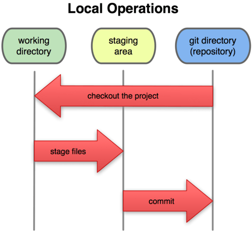

Welcome to my Programming Blog!
Hello everyone, welcome to this blog dedicated to sharing knowledge about Git/GitHub and terminal commands that we've learned during class. This space is designed to serve as a quick reference for the most important concepts.
In this blog you'll find practical information about:
- The Git and GitHub workflow
- The most commonly used Git commands with examples
- A reference of essential terminal commands
- Practical examples of each concept
This blog is organized into two main sections:
- Git and GitHub: Where you'll learn the basic workflow, fundamental commands, and best practices.
- Terminal Commands: A reference of the most used terminal commands, with examples and explanations.
Why learn Git and terminal commands?
Git is an essential tool for any modern developer, as it allows:
| Benefit | Description | Importance |
|---|---|---|
| Version control | Maintain a complete history of changes | High |
| Collaboration | Work with other developers without conflicts | High |
| Backup | Have backups of your code | Medium |
| Experimentation | Test new ideas without affecting the main code | Medium |
Git Preview

# Basic example of Git workflow
git init
git add .
git commit -m "First commit"
git push origin main
git init
git add .
git commit -m "First commit"
git push origin main